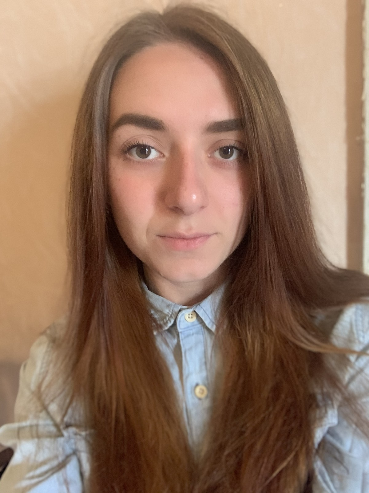

Я больше четрыех лет работаю в сфере обслуживания. По-этому могу найти общий язык с абсолютно разными людьми. Занималась туризмом и басскетболом. Во всех ресторанах занималась модернизацией и оптимизацией рабочего процесса. Сейчас поняла, что ноутбук, цифры и базы данных мне по душе.